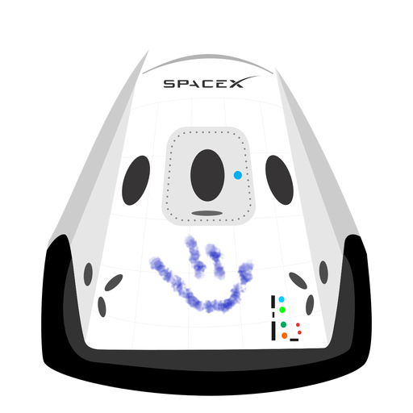

Hyperblog
Tu blog de cabecera
Este es el título atractivo e interesante del post
Y este es el párrafo de inicio donde vamos a explicar las cosas increíbles que se pueden hacer con ramas

Los blogs son la mejor forma de compartir informacion y tus ideas. Mucho mas que ir a conferecnias o salir en Youtube. Excepto si eres Rockstar. Pero estadisticamente no lo eres... por ahora.
Suscribete y dale Like